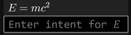

Welcome to UnicodeMathML
UnicodeMath is a linear representation of math that resembles math notation and is easy to enter. For example, a/b is UnicodeMath for . It works well in Microsoft desktop apps such as Word, PowerPoint, Outlook, and OneNote but it hasn't been generally available elsewhere. The present applet is an attempt to remedy that lack on the web.
You can enter equations in four ways:
- Enter UnicodeMath in the input (upper-left) window. The corresponding 2D built-up math displays in the output (upper-right) window and the MathML for it displays below the output window. This option is quite reliable.
- Enter UnicodeMath directly into the output window. This option builds up what you enter automatically, similarly to entry in the Microsoft Office apps. This option is a work in progress.
- Click on the Dictate button or type Alt+d, wait for the bell, and dictate the equation in English. You need to have Internet access, and you need to enunciate clearly. This option is also a work in progress but if you get it to work it’s the fastest entry method except for:
- Paste MathML into the input or output window
See it in action
Click on the Demo button or type Alt+p in the input window to see it in action! Hit the space bar to pause the demo and hit it again to continue the demo. The arrow keys → and ↠move to the next/previous equation, respectively. Escape and Alt+p stop the demo.
Entering symbols
To enter a symbol, you can click on the symbol in one of the symbol galleries below the input window. But it’s faster to type the symbol’s LaTeX control word such as \alpha for α. After typing two letters, you get a math autocomplete dropdown with possible matches. This lets you enter the selected symbol (the one highlighted in blue) quickly by typing a space, Enter, or Tab. I use the space key since it’s so convenient.
For example, if you type \al, you see

Typing the space, Enter, or Tab key inserts 𝛼. If you want a different symbol in the dropdown, use the up/down (↑↓) arrow keys or the mouse to select the symbol you want and type the space, Enter, or Tab key, or click to enter it.
The math autocomplete menu helps you discover a LaTeX control word, and it speeds entry especially for long control words such as those in the dropdown

The symbol dictionary includes some control-word aliases, such as \union for \cup (∪), since you might not guess \cup is the LaTeX control word for the union operator ∪.
Character code points
Below the input window, there’s a Unicode codepoint window that displays the codepoints of the input symbols above the symbols. This is particularly useful for comparing two strings that appear to be identical but differ in one or more characters. Both the input and output windows support the Alt+x symbol entry method popular in Microsoft Word, OneNote, and NotePad. (It should be supported in all editors 😊). For example, type 222b Alt+x to insert ∫.
Speech, braille, LaTeX, dictation
In addition to generating MathML, you can click on buttons or enter a hot key to
- speak the math in English (Alt+s)
- braille the math in Nemeth braille (Alt+b)
- convert the math to Unicode LaTeX (Alt+t)
- dictate an equation (Alt+d)
The results for speech, braille and LaTeX are displayed below the input window. Dictation results are shown in the input, output, and MathML windows. Dictation hint: wait for the start beep (else the first word(s) might be missing) and enunciate clearly.
Math display
The math is rendered in the output window either natively or by MathJax according to a setting (click on the ⚙︎ to change it). MathJax’s typography resembles LaTeX’s. The native rendering is good although not yet as good as LaTeX. But an advantage of the native renderer is that you can edit built-up equations directly in the output window and copy all or parts of an equation. The only editing feature in the MathJax mode is Ctrl+c, which copies MathML for the whole equation to the clipboard.
Intents
UnicodeMathML works with MathML 4. A key addition in MathML 4 is the intent attribute, which allows authors to disambiguate math notation and control math speech.
For example, does |𝑥| mean the absolute value of 𝑥 or the cardinality of 𝑥? Absolute value is assumed by default since absolute value is more common than cardinality. The default MathML for |x| is <mrow intent="absolute-value(𝑥)"><mo>|</mo><mi>𝑥</mi><mo>|</mo></mrow>.
To specify cardinality, enter \card(x) (or ⓒ(x)). These inputs produce the MathML <mrow intent="cardinality(𝑥)"><mo>|</mo><mi>𝑥</mi><mo>|</mo></mrow>.
If you enter an absolute value or cardinality containing more than one symbol as in |a+b|, the MathML intent contains an argument reference $a. For |a+b|, the MathML is <mrow intent="absolute-value($a)"><mo>|</mo><mrow arg="a"><mi>ğ‘</mi><mo>+</mo><mi>ğ‘</mi></mrow><mo>|</mo></mrow>.
A matrix enclosed in vertical bars is treated as a determinant. For example, the UnicodeMath |â– (a&b@c&d)| builds up to
which has the MathML <mrow intent="determinant($a)"><mo>|</mo><mtable arg="a"><mtr><mtd><mi>ğ‘</mi></mtd><mtd><mi>ğ‘</mi></mtd></mtr><mtr><mtd><mi>ğ‘</mi></mtd><mtd><mi>𝑑</mi></mtd></mtr></mtable><mo>|</mo></mrow>.
The program infers intent attributes for absolute value and determinant, so only cardinality needs to be input without vertical bars. Note that the ambiguous expression |ğ‘|ğ‘+ğ‘|𝑑| is assumed to be (|ğ‘|)ğ‘+ğ‘(|𝑑|). If you want |ğ‘(|ğ‘+ğ‘|)𝑑|, enter |(ğ‘|ğ‘+ğ‘|𝑑)| and the parentheses will be removed.
As we see here, some intent attribute values are implied by the input notations of LaTeX and UnicodeMath. Others are implied by context. Still others must be declared explicitly by the content author, by a math-knowledgeable copy editor, or maybe eventually by AI.
Author intents
Since most content authors don’t know MathML, we need a way to allow them to enter intents easily. To this end, UnicodeMathML has an output-window context-menu option that lets you tag entities with intents. For example, clicking on the 𝐸 in 𝐸 = ğ‘šğ‘², you get the input box

and you can type in “energy†or whatever you want followed by the Enter key. If you type in “energyâ€, the resulting MathML is <mrow><mi intent="energy">𝐸</mi><mo>=</mo><mrow><mi>𝑚</mi><msup><mi>ğ‘</mi><mn>2</mn></msup></mrow></mrow>. Typing Atl+d speaks this as "energy equals m c squared".
UnicodeMath editing
As you type into the input window, various conversions occur:
- Letters are converted to math italic unless they 1) are part of a function name or of a control word (backslash followed by letters), or 2) follow a quote. For example, a → ğ‘
- Numeric subscripts/superscripts are converted to Unicode subscript/superscript characters, respectively. For example, a_2 → ğ‘â‚‚ and a^2 → ğ‘².
- Numeric fractions are converted to Unicode numeric fractions. For example, 1/2 → ½
- Control words are converted to their symbols, e.g., \alpha → 𝛼
Edit hot keys:
| Hot key | Function |
|---|---|
| Ctrl+b | Toggle the bold attribute. For example, select ğ‘ (U+1D44E), type Ctrl+b and get ğ’‚ (U+1D482) as you can verify in the codepoint window. |
| Ctrl+i | Toggle the italic attribute. If applied to a math italic character, this changes the character to the UnicodeMath way of representing ordinary text, i.e., put it inside quotes as in select ğ‘, Ctrl+i → “aâ€. |
| Ctrl+c | Copy the selected text to the clipboard. |
| Ctrl+m | Toggle between displaying 1) UnicodeMath in the input window and MathML below the output window, and 2) MathML in the input window and UnicodeMath below the output window. |
| Ctrl+v | Paste plain text from the clipboard. If the text starts with <math, <m:math, or <mml:math, the text is treated as MathML and builds up. |
| Ctrl+x | Copy the selected text to the clipboard, then delete the selected text. |
| Ctrl+y | Redo |
| Ctrl+z | Undo |
Symbol galleries
Most symbols have LaTeX control-word tooltips. For example, in the codepoint window, hovering over the integral symbol ∫ displays

Hovering over the ∪ in the Operators gallery displays

Here \cup is the standard [La]TeX control word for entering ∪ but since \union is easier to guess, it’s included too.
Output window editing
You can enter equations and edit the built-up display in the output window as shown in this video.
This "in-place" editing mimics the math editing experience in desktop Microsoft Word, Outlook, PowerPoint, and OneNote. The hot keys listed above work here too, as do the symbol galleries and the math autocomplete menus. The copy hot key, Ctrl+c, copies the MathML for the selected content into the plain-text copy slot, rather than copying the underlying plain text. This enables you to paste built-up math equations into Word and other apps that interpret "plain-text" MathML as MathML rather than plain text.
Currently arrow-key navigation needs work and there are other glitches. The implementation uses JavaScript to manipulate the MathML in the browser DOM and seems very promising.